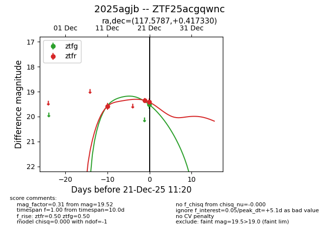
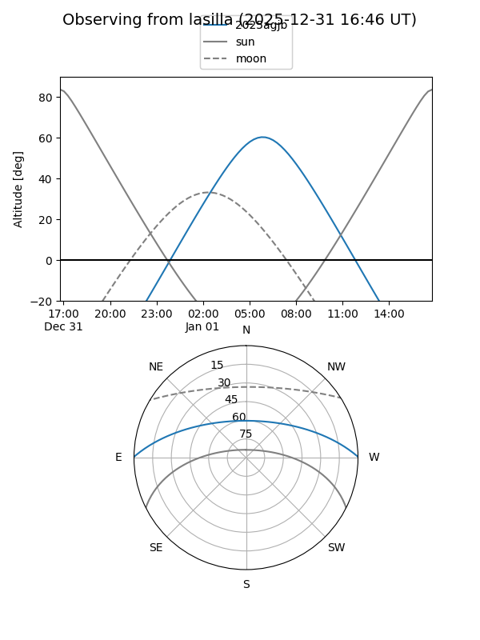

2025agjb
Target 2025agjb at 2025-12-18 11:18
Aliases and brokers:
FINK: fink-portal.org/ZTF25acgqwnc
Lasair: lasair-ztf.lsst.ac.uk/objects/ZTF25acgqwnc
ALeRCE: alerce.online/object/ZTF25acgqwnc
TNS: wis-tns.org/object/2025agjb
YSE: ziggy.ucolick.org/yse/transient_detail/2025agjb
alt names
ZTF25acgqwnc (ztf,fink_ztf)
2025agjb (tns,yse)
Coordinates:
equatorial (ra, dec) = 117.5787,+0.41733
equatorial (HMS+DMS) = 07:50:18.89,+00:25:02.39
galactic (l, b) = (219.3839,+13.26444)
Photometry
last ztfr=19.59
1 ztfr detections
Lightcurve

Visibility


Additional plots